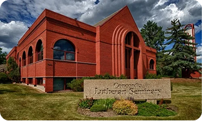

By Cheque
You can donate with a cheque by mailing or by dropping off in person at our Edmonton Campus at: 7040 Ada Blvd, Edmonton, Alberta, T5B 4E3
Map
In order for the seminary to operate efficiently, we aim to receive donations of about $50,000 a year. This is our target goal as it allows us to keep the lights on, pay our staff, and support students in their studies
There are some special and timely projects that we aim to raise donations for, here at the seminary. These are short term, smaller fundraising goals that lay outside day-today expenses. Our latest special project is for raising funds to revitalize the grounds of the seminary property.
You can donate with a cheque by mailing or by dropping off in person at our Edmonton Campus at: 7040 Ada Blvd, Edmonton, Alberta, T5B 4E3
MapYou can donate online through PayPal, e-transfer, or pre-authorized debit (PAD). If you’d like your gift directed to a specific area, such as the Adopt a Student Program, Guild Pantry, Endowment Fund, or a Memorial Gift, please include that information in the message
Donate OnlineAn estate bequest to the seminary often means a reduction in estate taxes rather than the residual estate left for family. Consider us "a member of your family." Contact Lutheran Foundation Canada:allen.schellenberg@lutheranfoundation.ca
Lutheran Foundation Canada